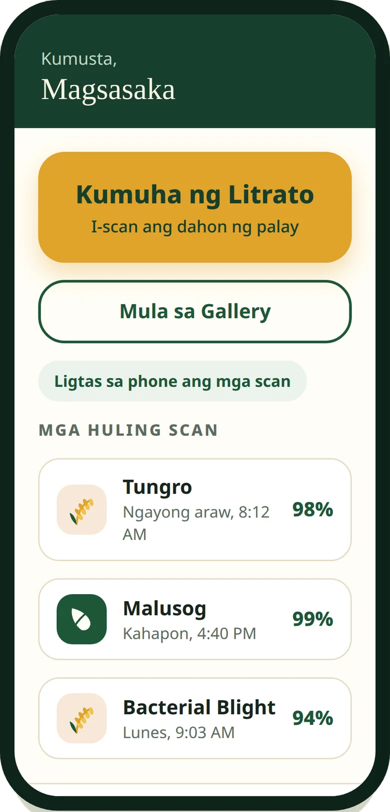
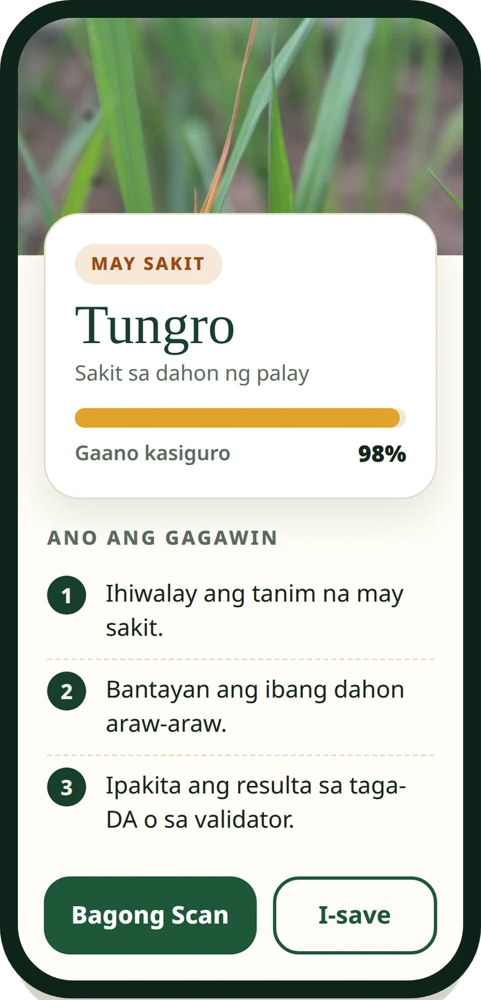

Rice Leaf Disease Classifier · Android
Know what is wrong with your rice leaf, in the field, offline.
Point your phone at a rice leaf and get an answer on the spot. PalayLens AI runs a MobileNetV2 model on the device itself, classifying six rice leaf conditions with no signal, no upload, and no waiting.
APK · 26.2 MB · Android 8.0 and up · Free for research and field evaluation
PalayLens_AI_v0.5.6.apk
SHA-256 08f68a50c0168ef052a759d2a04792486d7eec1a8e2574c1a4ac5d400ae2fcda
Always-latest link · the same build, at a permanent address for sharing


94.78%measured test accuracy
100%offline scanning
6leaf classes from one photo
Freefor research and field evaluation
How it works
Three steps, right in the field
Photograph a leaf
Take a photo of a rice leaf, or pick one from your gallery. A clear shot of the affected part of the leaf works best.
The phone does the thinking
A MobileNetV2 deep-learning model built into the app checks the photo on the spot. No upload, no waiting, no mobile data needed.
Read the result
You get the condition name, how confident the app is, and plain guidance on what to do next. Every scan is saved in the app’s history.
Installing the app
- Download the APK using the button at the top of this page.
- Open the downloaded file from your notifications or your Downloads folder.
- Allow installs from your browser when Android asks. That is normal for apps installed outside the Play Store.
- Tap InstallThen open PalayLens AI from your home screen.
What it detects
Six conditions, told apart
Bacterial Blight
Xanthomonas oryzae pv. oryzae
Water-soaked streaks along the leaf edges that turn yellow, then white, as the leaf dries out.
Blast
Magnaporthe oryzae
Spindle-shaped spots with gray centers and brown borders. One of the most destructive rice diseases worldwide.
Brown Spot
Bipolaris oryzae
Round, dark brown spots scattered on leaves and grains, common in nutrient-poor or stressed fields.
Healthy
The leaf shows no visible signs of the diseases above. Keep monitoring, especially after wet weather.
Tungro
Rice tungro bacilliform and spherical viruses
Yellow-orange discoloration and stunted growth, caused by viruses carried between plants by green leafhoppers.
Not a Rice Leaf
If the photo is not a rice leaf at all, the app says so and asks for a new photo instead of guessing.
Measured performance
Measured, not promised
F1-score by class, on the held-out test set
The model was trained on publicly available rice leaf image datasets and fine-tuned with a documented two-stage protocol, then tested on a held-out test set it had never seen. Classification runs entirely on the phone; scanning never needs an internet connection. PalayLens AI is a field aid, not a substitute for expert diagnosis: for severe or unfamiliar cases, consult your local agriculture office.
Privacy
Privacy, plainly
Photos stay on your phone. Scans are classified on the device and kept in the app’s history on the device only.
Sharing is your choice. With your permission, scans may be shared for this research. Turn sharing off in Settings at any time and nothing leaves the phone.
WiFi only, and private. Shared scans upload only over WiFi to a private research storage bucket, never over mobile data.
No accounts, no names, no ads. The app never asks who you are. Each phone is known only by an anonymous code.
Limited access. Shared scans are seen only by the research team and the study’s expert validator. Data is never sold and never used for advertising.
Protected by law. Data handling follows the Data Privacy Act of 2012 (RA 10173). The full policy is inside the app under Settings, Privacy Policy.
About the research
An undergraduate thesis, built with farmers
PalayLens AI is an undergraduate thesis project that develops and evaluates a deep learning-based mobile application for rice leaf disease classification using publicly available and locally acquired images. The system is being field-validated with rice farmers at the study site, alongside a farmer needs assessment and a usability evaluation. Local field photographs are used for evaluation only, never for training.
- Authors
- Mohammad Sidique Ibrahim, Rjed Carballo, Kristine Kane O. Abiol
- Adviser
- Janette Tibudan
- Institution
- Computer Engineering, St. Peter’s College, Iligan City
- Study site
- Purok 2, Barangay Digkilaan, Iligan City
Questions
Fair questions
Is the app free?
Yes. PalayLens AI is free for research and field evaluation. There are no ads, no accounts, and no in-app purchases.
Does it work without internet?
Yes. Classification happens on the phone, so scanning works anywhere, including fields with no signal. A connection is used only if you allow scan sharing over WiFi, or when the app checks this page for a new version.
Which phones can run it?
Any Android phone running Android 8.0 (Oreo) or newer. The download is 26.2 MB.
Why is it not on the Play Store?
It is a research prototype distributed by the study team from this page. Android may ask you to allow installs from your browser the first time; that is normal for apps installed outside the Play Store, and the install steps above walk through it.
How do updates work?
The app checks this page for new versions. When one is available, it offers the download and verifies the file’s SHA-256 checksum before installing, so the update you install is exactly the update published here.
Can it replace an expert?
No. PalayLens AI is a screening aid for the field. For severe, spreading, or unfamiliar cases, show the result to your local agriculture office or an expert validator.
Version history
Changelog
-
0.5.6CurrentNovember 5, 2026
Sharper scanning: photo quality checks and steadier results.
-
0.5.5PreviousNovember 5, 2026
Adds a Dashboard with scan statistics and upload status.
-
0.5.4PreviousNovember 5, 2026
Adds in-app update checks and a stability fix for large camera photos. The app now notices new versions on this page and offers a verified download.
-
0.5.3EarlierNovember 5, 2026
First public release. Signed release build, six-class on-device classification, privacy policy in the app, and research uploads organized by class.
Put a field lens in your pocket.
Free for research and field evaluation · Android 8.0 and up · Works offline